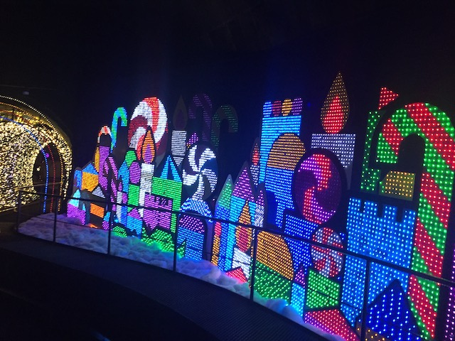

| |
Parque Espana Review

Parque Espana is a really nice park! I know this park doesn't get a ton of attention. I mean, sure, it's not completely ignored. I'm not introducing a brand new theme park that nobody ever knew about before Incrediblecoasters came along and visited. I mean, we had to learn about the park from other enthusiasts. But this park doesn't get brought up in the must-visit parks of Japan, like the Tokyo Disney Resort, Universal Studios Japan, Nagashima Spaland, and even Fuji-Q Highlands. But all those parks have either amazing theming or amazing coasters (some have both)! Very true! But guess what? So does Parque Espana! Yeah. This park is SURPRISINGLY well themed. I know it's weird to have a theme park in Japan that is pretending to be Spain. But you know what!? They go all in on it, and they really make it feel like Spain. Seriously, it really feels like Spain. But on top of that, the ride selection they have is really good. I mean, Pyrenees is great and all. And....yeah. One of B&Ms best coasters! I have a full review of it below where I just gush about it nonstop because it is that good. But on top of that, all the other rides are really good. The other coasters are fun or strange, there's several quirky dark rides, and like I said, the theming just makes this place so good. Hardcore enthusiast that only cares about coasters? Pyrenees is one of the best in Japan. Theme park enthusiast that primarily cares about the overall experience? Well, the park is super well themed and really does take you back to Spain. Check out the review and see what all they have to offer.
Rollercoasters
There is a link to a review of all the Rollercoasters at Parque Espana.
Top Coasters
Pyrenees Review

Fun Coasters
Gran Montserrat Review

Strange Coasters
Steampunk Iron Bull Review

Kiddy Coasters
Kiddy Montserrat Review

Flat Rides
There are almost no flat rides at Parque Espana. I mean, there's a carousel, a pirate ship, and a frog hopper somewhere. I rode none of them. And yeah. Parque Espana does NOT have a good flat ride collection as.....there's barely an flat rides. But that seems to be the case with most parks that really serve as theme parks. And yeah. You don't go to Parque Espana for flat rides.
Dark Rides
OK. Now this is where Parque Espana gets intersting. As....this park has several dark rides. And they're not the standard dark rides that most parks have. They're not amazing high quality dark rides that you find in Disney and Universal parks. But they're also not the standard shooting dark rides you find at most parks nowadays. The dark rides here are...interesting to say the least. I rode 2 of the dark rides here. First off, the Nutcracker. Now this is a dark ride all about....the Nutcracker. Hey, I may not speak Japanese, but I know that story. And it's fun to ride. Only problem is....this ride is avaliable yearround. Yeah. Kind of awkward to ride that the day before Halloween. The other ride we did was Battala del Alcazar. This ride was weird. On the one hand, it literally just goes in a circle. So, this is the worst shooting dark ride in that respect. And it feels like a circle. As for what it's about. Well, I don't speak any Japanese. So I had no idea what was going on. But....from what I read after riding, it's themed to the Siege of the Alcázar, one of the most important battles of the Spanish Civil War. Now I know a lot of history, but....the Spanish Civil War is one area where I don't know much about. Though from my 30 second glance at the Wikipedia article, sounds like the bad guys won this important battle. Not something worth commemerating a dark ride about (Fun fact. After this civil war, Spain was a dictatorship until 1975. So yeah). These are the 2 dark rides I did ride, but there's a couple more. Most interestingly, there's Don Quixote's Magical Flight. Now at first glance, this is looks like a Peter Pan knock-off. But that's only because it has the flying ship cars and is one very few suspended dark rides. The actual story is basically the story of Don Quixote, as told by anthropomorphic animals. So this ride is basically Furry Don Quixote. The only reason I didn't ride it is because it was closed. Fun fact, the Furry Don Quixote characters are the park mascots. So you see them all around the park.

"I don't care that it's October! Merry F*cking Christmas!"
Water Rides
Parque Espana only has one water ride. Splash Montserrat. And....it's all right. Nothing special or crazy. Not a Top 10 Water Ride by any means. But it's still a fun ride. It's the parks log flume. And I have to admit. It looks GREAT!! It has a great location, built right in the side of an artificial mountain. It has a decent sized drop. And on top of that, Gran Montserrat encircles the mountain, and that is a surprisingly good mine train. So I've got high expectations for it. And the main problem is....there isn't really much more than you see. You go around the artificial mountain, up the lifthill, drop. It's fun. SPLASH!!! And it's over. Not bad. I can think of so many worse log flumes. But I can also think of so many better log flumes. I would love to see another water ride here, maybe a rapids ride. But hey. The log flume is still fun and worth checking out.
 Fun log flume, but nothing special.
Fun log flume, but nothing special.
Dining
All right. The food at Parque Espana is....intersting. I mean, I only ate at one resteraunt at the park. Amigo. So this is gonna have to be what we base the Parque Espana cuisine after. This resteraunt is....interseting. It's like a mix between standard American theme park food and local Japanese food. And yeah. The curry here is SO GOOD!!!! Curry Curry Curry Curry Curry Curry Curry Curry Curry!!! Yeah. I like the curry here. But if you're boring like Logan, you can get the hot dog, which,,,,it was good. But it was no curry. Looking at the rest of the cuisine, you can get Japanese food, Italian food, American food, Chinese food, Spanish food, Pizza, Pasteries, and more. And considering how much I liked the curry here, I expect the rest of the food to be really good.
 Japanese Curry is so good!
Japanese Curry is so good!
Theming and Other Attractions
Here are the reviews of all the other stuff at Parque Espana. As far as theming goes, there is A LOT of it. After all, this is Parque Espana. The whole park is literally pretending to be a little peice of Spain. They literally call it Shima Spain Village, as....it's supposed to be a Spanish village in the middle of Shima, Japan. So, there's a lot of stuff that looks fairly spanish! Granted, I've only been to Barcelona. That's the only part of Spain I've visited. But some of the stuff here honestly reminds me of artifacts from my hometown, which once part of a Spanish colony, before coming part of Mexico, before becoming California. And it has a fairly similar look. So yeah. The theming is really good. Sure, it's not Disney or Universal good, but still very impressive. As for other stuff to do, well....there's some interseting stuff they have. First off, they have an Ice Castle. Now these are standard in most Japanese parks. The only difference is that the Parque Espana one is included with admission (proboably because Parque Espana is a really expensive Japanese park). These things are fun. A lot of cool architecture made from ice in there. And if it's a hot day, they'll really help you stay cool. I know there's a pirate ship in the lower section of the park. There used to be a Pirates of the Carribean knock-off there. But now, it's just a cool random pirate ship. And speaking of the lower level, we have to talk about the escelator. Now the escelator at Parque Espana is without a doubt, the best escelator. They put it indoor, and they add music, lights, and just make getting from the upper part of the park (where most of the rides are) to the lower part of the park a lot of park. Gee. If only other theme parks made their escelators this cool *cough*Universal Studios Hollywood*cough*. Also, I did see some show in the Colosseum (Psst. Hey guys! The Colosseum is in Italy. Not Spain). So there's at least one show in there with the Furry Don Quixote characters. I'm sure there's a lot more at the park. But....just the whole Spain theming really adds a lot to the park.
 Just a quick reminder that we are in Japan.
Just a quick reminder that we are in Japan.
 Best escelator ever!
Best escelator ever!
In Conclusion
Parque Espana is a really fun and underrated park. Sure, it may not be the best ever, but honestly, this park is great no matter how you slice it. The coaster selection is great, home to one of the best coasters that B&M has ever built, as well as a couple other fun and strange coasters. But if you're looking for a pure theme park, then this place also has plenty for you. The park is themed to Spain, and....they really go all in on it. I mean, Spain in Japan just seems like a fun and wacky combo, and they go all in. Everything in the park is themed to Spain. I mean, the Don Quixote characters are the park mascots, except in furry form which is both strange and cool at the same time. I highly approve of that. There's a lot of art throughout the park, and like I said, they even go so far as to make sure that their escelators are well themed. I know this park is pretty out of the way. Shima isn't exactly a big city, and no JR Lines go here. So you're gonna have to use a private line. And it's not a cheap train ride. The whole park is pretty pricey. But for what you get, it is totally worth it. Make sure you hit this place up whenever you're doing a Japan trip.
Enthusiast FAQs.
*Are there kiddy coaster restrictions? - Nope. You can ride Kiddy Montserrat.

Tips
*Marathon Pyrenees! That ride is so good!
*Don't forget to check out the rest of the park. It's really good and not just Pyrenees.
*Steampunk Iron Bull is right at the front of the park. It's easy to walk by and miss.
*Do NOT miss Pyrenees.
*Have Fun!
Theme Park Category:
Theme Park
Location
Shima, Mie, Japan
Last Day Visited
October 30, 2018
Video
I unfortunetly did not shoot enough video to make a Parque Espana video.
Complete Update List
2018
JAPAN 2018!!! =)
Here's a link to the parks website.
Home
|